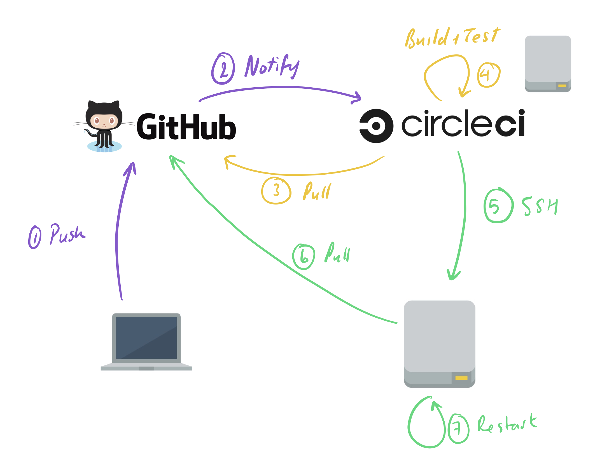
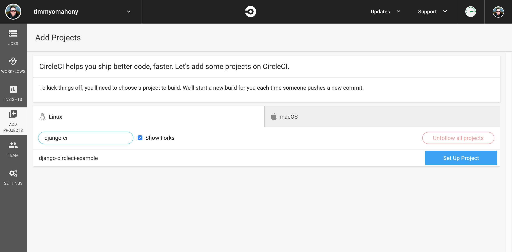
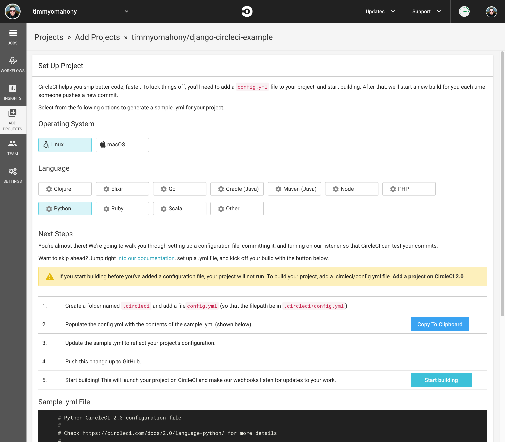
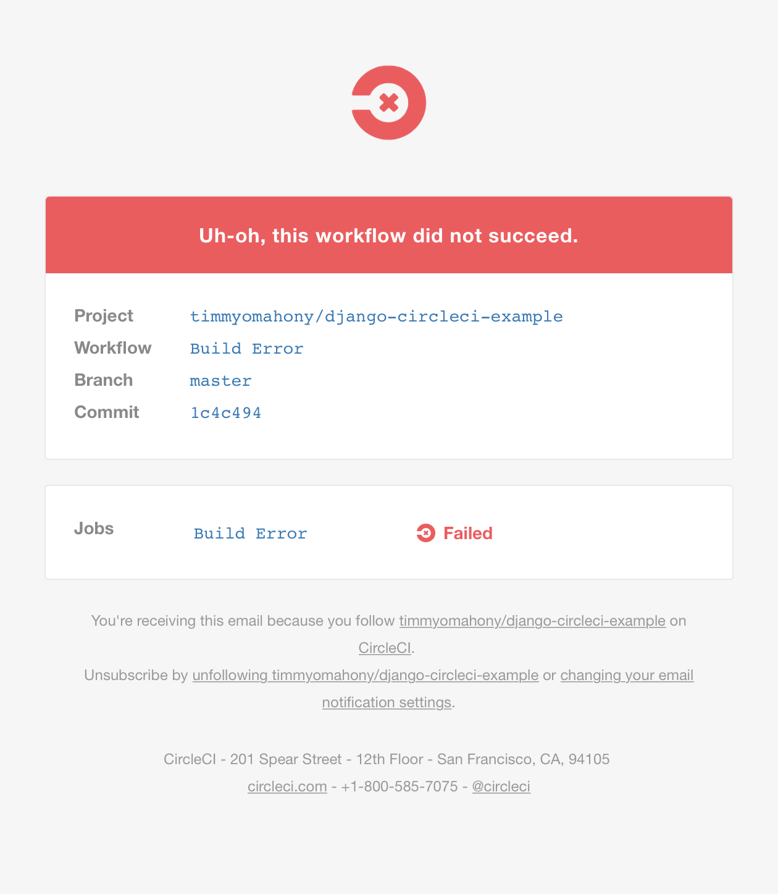
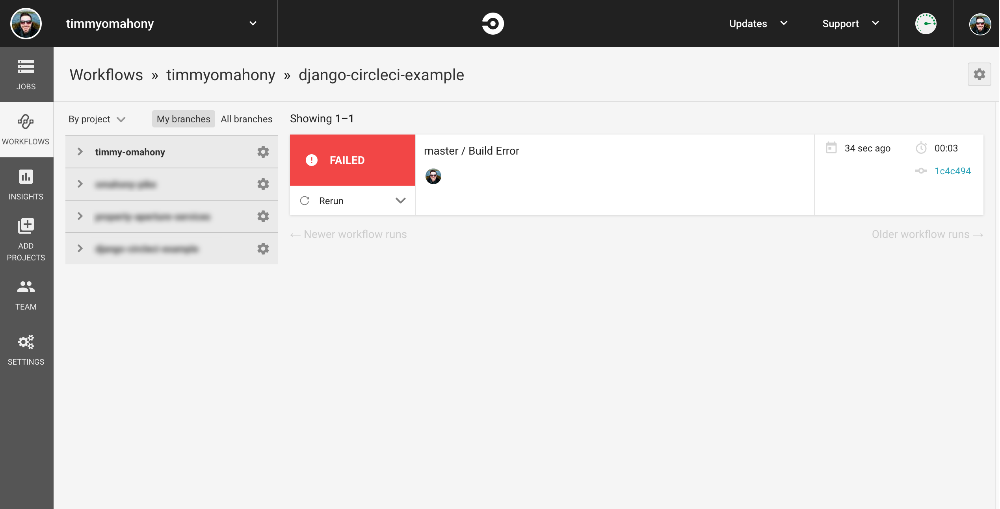
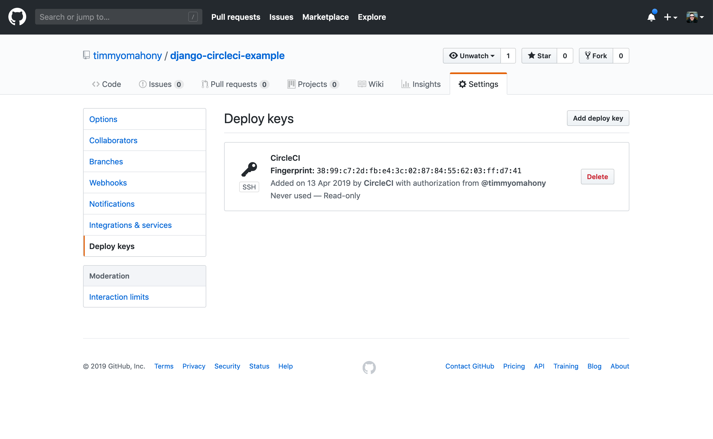
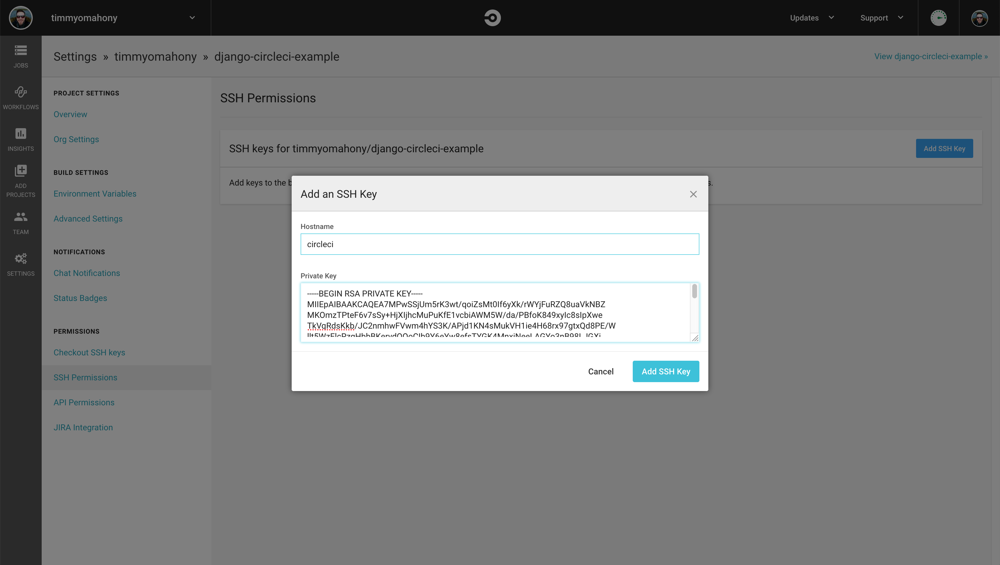
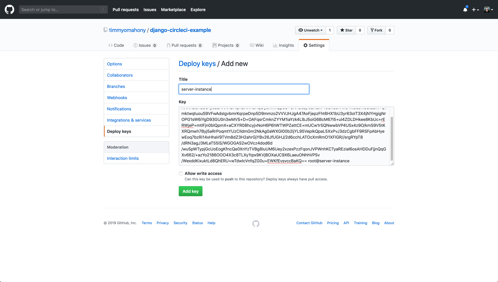
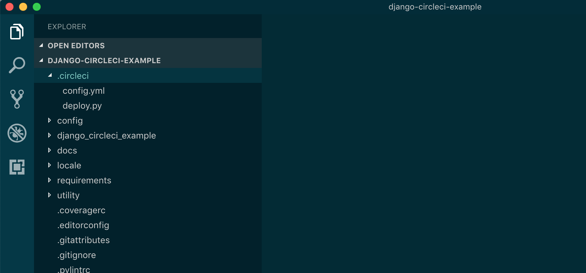

Django and CircleCI 2.0
—

Using Continuous Integration with your project is a great way to deploy features and fixes automatically, without having to faff around SSHing into machines, manually pulling down changes and restarting servers. The killer feature though is being able to automatically test your project before those changes are automatically pulled.
I use CircleCI for this, so in this post I’ll show you how to deploy a standard Django project (or any Python project really) using CircleCI. This is certainly not the only way to do this, but it’s what works for me.
If you’ve got any improvements or criticisms of this approach, please add them in the comments - I’m interested to hear how other people are handling this.
Overview
Here’s my usual flow between CircleCI and GitHub when making changes to my projects:

Simple right! OK, so it looks complicated, but there are three main stages:
- I push my code
- CircleCI pull my code, builds it and tests it
- CircleCI deploys my code
Here’s what happens in more detail:
- I start with my
developandmasterbranches on GitHub - I push changes to
developbranch from my local machine - GitHub informs CircleCI (via post commit hooks) that there are new changes for my project
- CircleCI creates a new temporary server instance on their infrastructure
- CircleCI pulls down my latest commit from Github to that temporary server instance
- CirleCI read the
config.ymlconfiguration file in my repo - CircleCI builds my code and runs tests according to the commands I’ve included in above configuration file
- If tests pass, CircleCI deploys the changes to my infrastructure (i.e. my staging server) via SSH and Fabric
- I then manually create a pull request for review on Github
- Once this is reviewed and merged to
master, the process is repeated for my production server instance
Project repo
Before we start, we need a GitHub repository that we are interested in automatically deploying somewhere. In this example, I’m using my own public django-circleci-example repo that you can see on my GitHub profile and I’m deploying it to my own Linode server. This example Django project was set up using Django Cookiecutter.
Your project is probably deployed on your servers a little bit differently so keep that in mind when we come to creating our CicleCI configuration files.
CircleCI project setup
First thing is to add our project to CircleCI. CircleCI should be smart enough to show you all of the repos you’ve got in your GitHub account. If you’ve only just created the repo, you might need to wait a few minutes and refresh:

Select “Linux”, “Python” and “Start Building”

.. and then watch everything fail immediately. This is because we haven’t yet provided a CircleCI configuration file. You will receive an email:

You’ll then see your first failed build on the dashboard:

For CircleCI to know what it should do, we need to provide it with a configuration YAML file. We do this be creating a .circle folder in the root of our repo and then creating a config.yml file that makes use of a certain syntax.
How everything communicates
Before going any further, let’s think about how GitHub, CircleCI and our own servers are going to communicate:
- CircleCI needs to be able to pull down our repo from GitHub to its servers
- CircleCI also needs to be able to SSH into our server to deploy the changes
- While SSHed into our server CircleCI needs to be able to pull down our codebase from GitHub
For this to work, we need a number of public/private keypairs:
- CircleCI will have access to our repo via a GitHub deploy key. This will allow read-only access to the repo.
- For CircleCI to access our server from their server, we’ll need to generate a passphraseless keypair and add it to the CircleCI project settings
- For our servers to access our GitHub repo, we’ll need another GitHub read-only deploy key. Unlike the first deploy key, we’ll need to create this manually.
1. CircleCI to GitHub
This deploy key is automatically created when you add a new project to CircleCI. GitHub will send you an email to notify of this, but you will also see the keypair in both the CircleCI project settings as well as your GitHub repo settings:


2. CircleCI to our server
Ideally we would generate this key on the actual CircleCI server instance, so that the private key never leaves the machine. Unfortunately that’s not possible here, as the CircleCI server instances are created and destroyed everytime changes are detected.
Instead, we create the keypair locally and add the private key to the CircleCi project settings. CircleCI will then inject this private key into every new build instance that is created.
So, on our local machine, generate a new passphraseless keypair using:
$local> ssh-keygen -m PEM -t rsa -C "root@circleci"
It’s important to use -m PEM -t rsa here due to a bug with CircleCI documented on their forums. It’s also important that we don’t add a passphrase to this key. Doing so would prevent CircleCI from deploying our changes, as the SSH session would hang on connection while waiting for the passphrase prompt.
We then add the private key to our project settings:

Then log into our server instance and add the public key to ~/.ssh/authorized_keys.
NOTE: Depending on your setup, for you to login to your server instance may require a fourth SSH key 😭!
3. Our server to Github
Finally, we need to add another deploy key to allow our server to pull changes from Github. While still logged into our server instance, create another keypair:
$server> ssh-keygen -t rsa -b 4096 -C "root@server-instance"
Again, make sure this is passphraseless when completing the steps. We then copy the public key at ~/.ssh/id_rsa.pub to our Github repo settings:

We then configure SSH on our server to use the correct private key:
$server> vim ~/.ssh/config
and adding:
ServerAliveInterval 60
ServerAliveCountMax 100
TCPKeepAlive yes
IdentitiesOnly yes
Host github.com
Hostname github.com
IdentityFile ~/.ssh/id_rsa
You can then clone the repo to your server:
$server> git clone git@github.com:timmyomahony/django-circleci-example.git
NOTE: If you have multiple repos on the same host, you can check out this post on how to handle multiple deploy keys.
Circle CI configuration and deployment files
Phew. Next up we need to create our configuration files. These files will exist within our repo, in a .circleci folder. The two files we need are:
- a
config.ymlYAML file that CircleCI will use to build our app for testing - a Fabric
deploy.py“fabfile” that CircleCI will use for deployment to our server

Our buid configuration
So back on our local machine, create a .circleci folder in the root of our repo:
$local> mkdir .circleci
And add the config.yml file:
$local> vim .circleci/config.yml
version: 2
jobs:
build-job:
docker:
- image: circleci/python:3.7.3
- image: circleci/postgres:10.5
environment:
DATABASE_URL: postgres://postgres:@localhost/circle_test
DJANGO_SECRET_KEY: test
DJANGO_READ_DOT_ENV_FILE: True
DJANGO_SETTINGS_MODULE: config.settings.test
working_directory: ~/app
steps:
- checkout
- restore_cache:
key: v001-app-{{ .Branch }}-{{ checksum "requirements/local.txt" }}
- run:
name: Install Python dependencies
command: |
python3 -m venv venv
. venv/bin/activate
pip install -r requirements/local.txt
- save_cache:
key: v001-app-{{ .Branch }}-{{ checksum "requirements/local.txt" }}
paths:
- 'venv'
- run:
name: Add python project to path
command: 'echo "$(realpath .)/app" > venv/lib/python3.7/site-packages/app.pth'
- run:
name: Run tests
command: |
. venv/bin/activate
python manage.py test
deploy-job:
docker:
# Important to note that we're using 2.7 here. This is because at the time of
# writing, Fabric doesn't work with Python 3
- image: circleci/python:2.7
working_directory: ~/app
steps:
- checkout
- run:
name: Deploy via Fabric
command: |
sudo pip install fabric==1.14.0
if [ "${CIRCLE_BRANCH}" == "master" ]; then
fab -f .circleci/deploy.py -i ~/.ssh/id_rsa production deploy
else
fab -f .circleci/deploy.py -i ~/.ssh/id_rsa staging deploy
fi
workflows:
version: 2
build-deploy:
jobs:
- build-job:
filters:
branches:
only:
- develop
- master
- deploy-job:
requires:
- build-job
filters:
branches:
only:
- develop
- master
At a high level, you create your deployments via “workflows”, “jobs” and “steps”. A workflow has one or more jobs and a job has one or more steps. In our workflow, we have two jobs:
- A “build” job that builds our app on a temporary server and tests it
- A “deploy” job that uses Fabric to deploy our app to our servers
Our “deploy” job is dependant on our “build” job. In other words, if our “build” job fails because our tests didn’t pass, it won’t be deployed to our servers.
This is a very simple example of a CircleCI configuration. Have a look at their documentation to find out more of the possibilities available.
Let’s go over some of the details:
- Docker images: CircleCI uses Docker when creating its server instances so you need to tell it which Docker images you want to use in your configuration. I’ve choosen Python 3.7.3 and Postgres 10.5, but there are many other images available to use. For example, you might want to use Postgis if you have a GeoDjango project. You can see a list of available Docker images in CircleCI here.
- Environments: You’ll see that we are configured to handle two environments: “staging” and “production”. Depending on which branch we push to, our app will be built for either staging or production. In our case these deployments are very similar (as we always want staging to be as close to production as possible for testing purposes) but it’s possible you might want to vary your setup depending on your environments.
- Variables: The configuration gives you the opportunity to inject environment variables into the build which is very useful if your Django project depends on them for its settings. In our configuration above we are using the environment variables required by Django Cookiecutter. This works OK for non-sensitive environment variables, but you wouldn’ t want to include any secret keys or API keys here. If you sensitive values, you can also inject these environment variables into your builds via the project settings.
- Caching: CircleCI allows you to cache things to speed up your build. We’re saving our virtual environment to the cache. It will only be invalidated if our project requirements change or if we manually change the
v001-appused in the cache step.
Our deployment configuration
Again, for the deployment job we’re using Fabric. It’s worth pointing out that we’re not using any built-in deployment approach from CircleCI. We’ve just configured a job called deploy-job that runs a Fabic script. It’s Fabric itself that will be handling the actual deployment steps.
Also, it’s highly likely your Fabric configuration will be different to the example below, as it depends on how the Django project is set up on your server.
My deployment looks like:
- Repo saved at
~/django-circleci-example - Using
virtualenvandvirtualenv-wrapper. My virtual environment is calleddjango-circleci-exampleand is saved in~/.virtualenvs/django-circleci-example - Using Nginx as the proxy
- Using Gunicorn as the application server
- Using Supervisord to manage the processes
With that in mind, here is the Fabric deploy.py configuration that we’ll add to the repo:
$local> vim .circleci/deploy.py
#!/usr/bin/python2
from fabric.api import env, run, cd, task
debug = False
"""
Fabric deploy script
This is a Fabric (python 2.7) deployment script to be used by CircleCI to
deploy this project automatically to either production or staging.
"""
if debug:
import paramiko
paramiko.common.logging.basicConfig(level=paramiko.common.DEBUG)
env.venv_name = 'django-circleci-example'
env.path = '~/django-circleci-example'
env.user = 'admin'
@task
def production():
env.branch = 'master'
env.hosts = ['timmyomahony.com', ]
@task
def staging():
env.branch = 'develop'
env.hosts = ['timmyomahony.com', ]
@task
def venv(cmd):
run('workon {0} && {1}'.format(env.venv_name, cmd))
@task
def deploy():
with cd(env.path):
run('git pull origin {0}'.format(env.branch))
venv('pip install -r requirements/production.txt')
venv('python manage.py migrate')
venv('python manage.py collectstatic --noinput')
run('supervisorctl reread')
run('supervisorctl update')
run('supervisorctl restart django-circleci-example')
At this point, you should be good-to-go. All you need to do is push changes to your develop branch and your app should be automatically built and deployed.
This is only scratching the surface of what’s available in CircleCI. If you’ve got any suggestions or criticisms, I’d love to hear about them below in the comments.